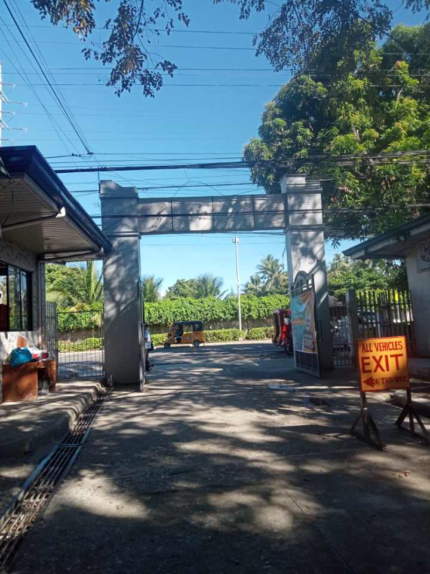

The Entrance and Exit of CTU Danao Gate
Entrance

"CTU Danao Entrance: The main entrance to the campus, where the hustle and bustle of campus life begin. It serves as the gateway for students, faculty, teachers, and visitors, creating a lively atmosphere throughout the day. This entrance is always filled with the energy of students hurrying to their classes, faculty members heading to meetings, and visitors exploring the vibrant university grounds."
Vehicle Entrance

"CTU Danao Vehicle Entrance: The main gateway for cars, buses, and other vehicles entering the campus. It’s where staff, students, and visitors arrive by vehicle, providing easy access to the university’s grounds. This entrance ensures smooth traffic flow, connecting the campus to the surrounding areas."
Exit

"CTU Danao Exit: The main exit for students, faculty, staff, and visitors leaving the campus. It's a busy area where people exit at the end of the day or after an event. This exit provides easy access to the surrounding roads, connecting the campus to the community and making it a key point for everyone leaving the university."
Vehicle Exit
"CTU Danao Vehicle Exit: The gateway for cars and transportation, where all vehicles exit the campus. It’s a key point for students, staff, and visitors leaving the campus, ensuring smooth traffic flow. The exit area is busy throughout the day, especially during peak hours, as everyone heads home or to other destinations."